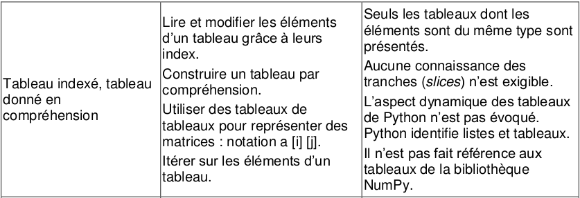
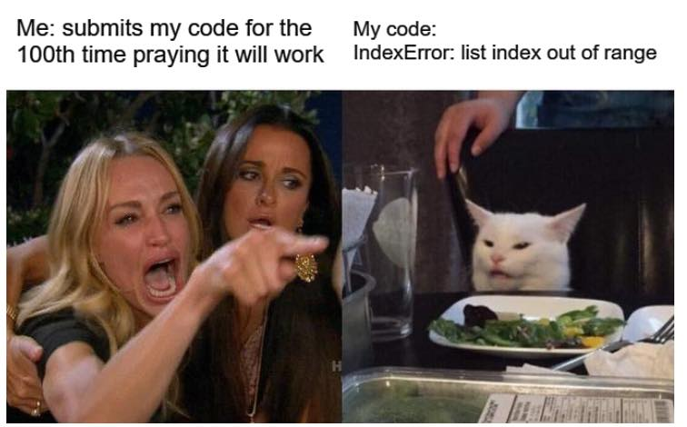
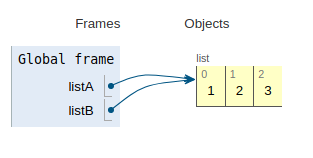
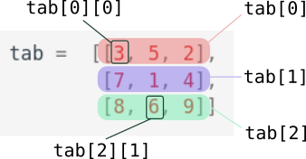

2.1 Listes⚓︎

Les listes font partie de ce qu'on appelle les données composites (nous verrons plus tard les tuples et les dictionnaires). Elles permettent de regrouper de manière structurée un ensemble de valeurs (et non plus une valeur unique). On les appelle listes en Python, ou bien tableaux de manière plus générale.
1. Déclaration d'une liste⚓︎
Exemple fondateur n°1 
Une variable de type liste sera délimitée par des crochets, et ses éléments séparés par des virgules :
>>> maliste = ["riri", "fifi", "loulou"]
On peut observer le type de la variable ainsi créée :
>>> type(maliste)
<class 'list'>
Remarques :
-
Même si cela n'a ici un grand intérêt, les éléments d'une liste peuvent donc être de types différents : ici, tous les éléments de ma liste sont des chaînes de caractères (
str), mais la liste["riri", 5, "fifi", "loulou"]est aussi une liste valide. -
Une liste vide se déclarera avec
[].Nous verrons plus tard qu'il est fréquent dans les exercices de partir d'une liste vide et d'ajouter progressivement des éléments.>>> copies_corrigees = []
2. Accès aux éléments d'une liste⚓︎
Exemple fondateur n°2
On accède à un élément d'une liste en mettant entre crochets l'indice de l'élément (qui commence à zéro).
>>> famille = ["Bart", "Lisa", "Maggie"] # (1)
>>> famille[0]
'Bart'
>>> famille[1]
'Lisa'
>>> famille[2]
'Maggie'
>>> famille[3]
Traceback (most recent call last):
File "<pyshell>", line 1, in <module>
IndexError: list index out of range
- Nous prendrons souvent l'exemple de la famille Simpsons.
Remarques :
-
Un indice qui dépasse la valeur
longueur de la liste -1provoquera donc une erreurlist index out of range. C'est une erreur très fréquente lorsqu'on manipule des listes.  -
Il est par contre possible d'utiliser des indices négatifs. On utilise par exemple très souvent l'indice -1 pour accéder au dernier élément de la liste, sans avoir à connaître la longueur de celle-ci :
>>> famille[-1]
'Maggie'
3. Longueur d'une liste⚓︎
Exemple fondateur n°3
La longueur d'une liste sera donnée par la fonction len(), qui renvoie donc un nombre entier positif ou nul.
>>> len(famille)
3
Remarques :
- La liste vide a pour longueur 0 :
>>> len([]) 0 - Le dernier élément d'une liste
maliste(non vide) sera donc toujours l'élément d'indicelen(maliste)-1.>>> famille[len(famille) - 1] 'Maggie' - Comme indiqué précédemment, ce dernier élément est aussi accessible par l'indice -1.
4. Parcours des éléments d'une liste  ⚓︎
⚓︎
Il existe deux méthodes pour parcourir séquentiellement tous les éléments d'une liste. Ces deux méthodes sont à maîtriser impérativement.
4.1 Parcours «par éléments»⚓︎
C'est la méthode la plus naturelle, celle déjà vue lors de la présentation de la boucle for. Nous allons simplement itérer sur les éléments de la liste.
Exemple fondateur n°4
Le code :
1 2 3 4 | |
Bart
Lisa
Maggie
Remarque :
- Penser à donner un nom signifiant à la variable qui parcourt la liste. Il aurait par exemple été très maladroit d'écrire
En effet le nom de variable
for k in famille: print(k)kest habituellement utilisé pour les nombres (les indices, les compteurs...).
Exercice 1
Après un référendum, la liste urne contient uniquement des 'oui' ou des 'non'.
Déterminer le vainqueur de ce référendum.
urne = ['oui', 'non', 'non', 'oui', 'oui', 'oui', 'non', 'oui', 'oui', 'oui', 'non', 'oui', 'non', 'non', 'oui', 'non', 'non', 'oui', 'oui', 'oui', 'oui', 'non', 'non', 'oui', 'non', 'oui', 'non', 'non', 'non', 'oui', 'oui', 'oui', 'oui', 'non', 'oui', 'non', 'non', 'oui', 'non', 'non', 'oui', 'non', 'non', 'non', 'non', 'non', 'non', 'non', 'oui', 'non', 'non', 'oui', 'oui', 'non', 'oui', 'oui', 'oui', 'oui', 'oui', 'oui', 'non', 'non', 'oui', 'oui', 'oui', 'oui', 'non', 'non', 'non', 'oui', 'oui', 'oui', 'non', 'non', 'non', 'non', 'oui', 'non', 'non', 'non', 'non', 'non', 'non', 'non', 'non', 'oui', 'non', 'oui', 'non', 'non', 'oui', 'oui', 'non', 'non', 'non', 'oui', 'oui', 'non', 'oui', 'oui', 'non', 'non', 'oui', 'oui', 'oui', 'non', 'oui', 'non', 'oui', 'oui', 'oui', 'oui', 'oui', 'non', 'non', 'non', 'non', 'oui', 'oui', 'oui', 'non', 'oui', 'non', 'oui', 'oui', 'oui', 'oui', 'oui', 'non', 'non', 'oui', 'non', 'non', 'non', 'non', 'non', 'non', 'oui', 'non', 'non', 'oui', 'non', 'non', 'oui', 'non', 'non', 'oui', 'oui', 'oui', 'oui', 'oui', 'oui', 'non', 'oui']
1 2 3 4 5 6 7 | |
4.2 Parcours «par indice»⚓︎
Chaque élément étant accessible par son indice (de 0 à len(liste) - 1 ), il suffit de faire parcourir à une variable i l'ensemble des entiers de 0 à len(liste) - 1, par l'instruction range(len(liste)) :
Exemple fondateur n°5
Le code :
1 2 3 4 | |
Bart
Lisa
Maggie
 Bonne habitude à prendre : nommer sa variable d'indice
Bonne habitude à prendre : nommer sa variable d'indice i, j, k ou indice mais pas autre chose !
4.3 Avantages et inconvénients de chaque méthode⚓︎
4.3.1 Parcours par élément⚓︎
for membre in famille:
print(membre)
Les avantages 
- la simplicité : un code plus facile à écrire, avec un nom de variable explicite.
- la sécurité : pas de risque d'
index out of range!
Les inconvénients 
- méthode rudimentaire : lorsqu'on est «positionné» sur un élément, il n'est pas possible d'accéder au précédent ou au suivant. (et c'est parfois utile).
- on ne peut pas modifier l'élément sur lequel on est positionné :
>>> lst = [1, 2, 3]
>>> for nb in lst:
nb = nb * 2 # (1)
>>> lst
[1, 2, 3] # (2)
- On veut multiplier par 2 chaque élément de la liste
- La liste
lstn'a pas changé...
4.3.2 Parcours par indice⚓︎
for i in range(len(famille)):
print(famille[i])
Les avantages
- le contrôle : en parcourant par indice, on peut s'arrêter où on veut, on peut accéder au suivant/précédent...
- pour les tableaux à deux dimensions, on retrouve la désignation classique d'un élément par numéro de ligne / numéro de colonne.
Les inconvénients
- la complexité : il faut connaître le nombre d'éléments de la liste (ou le récupérer par la fonction
len()) - le risque d'erreur : encore et toujours le
index out of range...
Exercice 1
On donne la liste :
lst = [3, 1, 4, 1, 5, 9]
- Afficher les éléments de cette liste.
- Afficher les éléments de cette liste dans l'ordre inverse (en commençant par 9)
1 2 3 4 | |
Exercice 2
Trouvez le nombre qui est exactement à la même place dans la liste list1 et dans la liste list2, sachant que :
- les deux listes ont la même taille
- vous n'avez droit qu'à une seule boucle
for.
list1 = [8468, 4560, 3941, 3328, 7, 9910, 9208, 8400, 6502, 1076, 5921, 6720, 948, 9561, 7391, 7745, 9007, 9707, 4370, 9636, 5265, 2638, 8919, 7814, 5142, 1060, 6971, 4065, 4629, 4490, 2480, 9180, 5623, 6600, 1764, 9846, 7605, 8271, 4681, 2818, 832, 5280, 3170, 8965, 4332, 3198, 9454, 2025, 2373, 4067]
list2 = [9093, 2559, 9664, 8075, 4525, 5847, 67, 8932, 5049, 5241, 5886, 1393, 9413, 8872, 2560, 4636, 9004, 7586, 1461, 350, 2627, 2187, 7778, 8933, 351, 7097, 356, 4110, 1393, 4864, 1088, 3904, 5623, 8040, 7273, 1114, 4394, 4108, 7123, 8001, 5715, 7215, 7460, 5829, 9513, 1256, 4052, 1585, 1608, 3941]
1 2 3 4 5 6 | |
Exercice 3
Dans la liste
lst = [2428970, 1518306, 4971405, 1690994, 7918102, 4030834, 8830131, 7514856, 7903128, 6307569, 6624056, 5260490, 6447835, 4598783, 9108626, 5045240, 4128269, 4460134, 2497873, 5076659, 8104003, 7604887, 7451976, 4136924, 5691945, 8726293, 7855592, 3562473, 8849129, 6488474, 5303587, 2606124, 5484044, 4559758, 7592232, 2211406, 9974334, 7988936, 7582946, 7668748, 1799997, 3837917, 3196209, 7064342, 2543765, 1182013, 7253381, 1153735, 1037391, 4375946, 4445821, 5965587, 6001887, 4162629, 5235783, 8716582, 4901175, 5445422, 1120005, 8332321, 7075046, 2194175, 5557300, 2887907, 5103214, 2520744, 5104399, 2065665, 3035703, 7890213, 1758301, 3407982, 1355453, 4896338, 7979392, 9671602, 9690721, 7423779, 7423780, 3080825, 6785783, 3836837, 7310931, 1857470, 3492507, 2823231, 1492310, 1911148, 9620515, 5564910, 7009452, 7464745, 9608747, 7267383, 6939140, 6556578, 3592267, 8135497, 4881660, 5346884, 6859150]
1 2 3 4 5 | |
5. Modification d'une liste⚓︎
En Python, les objets de type List sont modifiables (on emploie le mot mutables). Et c'est souvent une bonne chose, car des listes peuvent évoluer après leur création.
Lorsqu'on souhaitera figer le contenu d'une liste (pour des raisons de sécurité du code essentiellement), on utilisera alors le type Tuple, qui sera vu ultérieurement.
5.1 Modification d'un élément existant⚓︎
Il suffit d'écraser la valeur actuelle avec une nouvelle valeur
Exemple fondateur n°6
>>> famille = ["Bart", "Lisa", "Maggie"]
>>> famille[0] = "Bartholomew" # oui, c'est son vrai nom
>>> famille
['Bartholomew', 'Lisa', 'Maggie']
5.2 Ajout d'un élement à la fin d'une liste : la méthode append() ⚓︎
Exemple fondateur n°7
>>> famille = ["Bart", "Lisa", "Maggie"]
>>> famille.append("Milhouse")
>>> famille
['Bart', 'Lisa', 'Maggie', 'Milhouse']
Remarques :
- La méthode
append()rajoute donc un élément à la fin de la liste. - Dans beaucoup d'exercices, on part d'une liste vide
[]que l'on remplit peu à peu avec desappend(). - (HP) Il est possible d'insérer un élément à la position
iavec la méthodeinsert:>>> famille = ["Bart", "Lisa", "Maggie"] >>> famille.insert(1, "Nelson") # on insère à la position 1 >>> famille ['Bart', 'Nelson', 'Lisa', 'Maggie']
Exercice 4
Construire une liste contenant tous les nombres inférieurs à 100 qui sont divisibles par 7.
1 2 3 4 | |
Exercice 5
On considère la liste temp = [4, -5, 8, 10, -1, -2, 7, 13].
Construire la liste temp_pos qui ne contient que les éléments positifs de temp.
1 2 3 4 5 6 | |
5.3 Suppression d'un élément d'une liste ...⚓︎
5.3.1 ... par la méthode remove()⚓︎
Exemple fondateur n°7
>>> famille = ['Bart', 'Nelson', 'Lisa', 'Maggie']
>>> famille.remove("Nelson")
>>> famille
['Bart', 'Lisa', 'Maggie']
Remarques :
- Attention,
removen'enlève que la première occurrence de l'élément désigné. S'il y en a d'autres après, elles resteront dans la liste :>>> lst = [3, 1, 4, 5, 1, 9, 4] >>> lst.remove(4) >>> lst [3, 1, 5, 1, 9, 4] - Si l'élément à supprimer n'est pas trouvé, un message d'erreur est renvoyé :
>>> lst = [3, 1, 4, 5, 1, 9] >>> lst.remove(2) Traceback (most recent call last): File "<pyshell>", line 1, in <module> ValueError: list.remove(x): x not in list
5.3.2 ... par l'instruction del⚓︎
L'instruction del (qui n'est pas une fonction) permet de supprimer un élément en donnant son indice.
>>> maliste = [8, 4, 2, 5, 7]
>>> del maliste[3]
>>> maliste
[8, 4, 2, 7]
Exercice 6
Exercice 01.1 de la BNS.
6. Construction d'une liste d'éléments identiques⚓︎
Il est souvent pratique d'initialiser une liste de taille donnée, souvent en la remplissant de 0.
Imaginons par exemple que nous souhaitions une liste de taille 26 remplie de 0. Il est possible de faire comme ceci :
1 2 3 | |
mais on préfèrera ce code :
Exemple fondateur n°8
>>> lst = [0]*26
qui produira la liste [0, 0, 0, 0, 0, 0, 0, 0, 0, 0, 0, 0, 0, 0, 0, 0, 0, 0, 0, 0, 0, 0, 0, 0, 0, 0]
Exercice 7
Que fait le code ci-dessous ?
texte = "cet texte est prodigieusement ennuyeux"
def rang(lettre):
return(ord(lettre) - 97)
compt = [0]*26
for lettre in texte :
if lettre != " " :
compt[rang(lettre)] += 1
À l'issue de ce code la variable compt contient [0, 0, 1, 1, 9, 0, 1, 0, 2, 0, 0, 0, 1, 3, 1, 1, 0, 1, 2, 5, 3, 0, 0, 2, 1, 0], qui correspond au nombre d'occurences de chaque lettre : 0 fois la lettre 'a', 0 fois la lettre 'b', 1 fois la lettre 'c', etc.
Ce genre de comptage se fera de manière beaucoup plus efficace et élégante avec la structure de dictionnaire.
7. Construction d'une liste en compréhension ⚓︎
C'est une grande caractéristique du langage Python (même si ce n'est pas une exclustivité) : la méthode de liste en compréhension propose une manière élégante, rapide et naturelle pour créer des listes.
7.1 «en compréhension», pourquoi ?⚓︎
Cette expression vient des mathématiques. On dit qu'on définit un sous-ensemble par compréhension lorsqu'on part d'un ensemble plus grand dont on ne garde que les éléments vérifiant une certaine propriété.
On pourrait par exemple définir les élèves de Première NSI de cette manière :
«élèves du lycée inscrits en classe de Première ayant choisi la spécialité NSI»
On part d'un ensemble large (les élèves du lycée) qu'on va ensuite réduire par des caractérisations spécifiques : être un élève de Première, puis avoir choisi la spécialité NSI.
7.2 Premier exemple⚓︎
Exemple fondateur n°9
Imaginons que nous possédons une liste data de températures, dont nous ne voulons garder que celles strictement supérieures à 20.
>>> data = [17, 22, 15, 28, 16, 13, 21, 23]
>>> good = [t for t in data if t > 20]
>>> good
[22, 28, 21, 23]
Explications :

7.2.1 le filtre éventuel⚓︎
C'est lui qui donne tout son sens à cette méthode : il permet de ne garder que certaines valeurs. Il est pourtant éventuel : que se passe-t-il s'il n'y a pas de filtre ?
>>> data = [17, 22, 15, 28, 16, 13, 21, 23]
>>> good = [t for t in data]
>>> good
[17, 22, 15, 28, 16, 13, 21, 23]
Exercice 8
On considère la variable phrase = 'Bonjour les vacances sont finies' et la variable voyelles = 'aeiouy'.
Construire en compréhension la liste liste_voyelles qui contient toutes les voyelles présentes dans la variable phrase.
>>> phrase = 'Bonjour les vacances sont finies'
>>> voyelles = 'aeiouy'
>>> liste_voyelles = [lettre for lettre in phrase if lettre in voyelles]
>>> liste_voyelles
['o', 'o', 'u', 'e', 'a', 'a', 'e', 'o', 'i', 'i', 'e']
7.2.2 l'ensemble de départ⚓︎
C'est à partir de lui que va se construire notre liste. Pour l'instant, cet ensemble de départ a toujours été de type list.
Cet ensemble peut être aussi donné à partir de l'instruction range().
Souvenons-nous de l'exercice 4 : «Construire une liste contenant tous les nombres inférieurs à 100 qui sont divisibles par 7.».
Une solution possible était :
1 2 3 4 | |
Ce code peut maintenant s'écrire très simplement en une seule instruction :
Exemple fondateur n°10
>>> lst = [n for n in range(1,101) if n % 7 == 0]
>>> lst
[7, 14, 21, 28, 35, 42, 49, 56, 63, 70, 77, 84, 91, 98]
7.2.3 la valeur à garder⚓︎
Pour l'instant, nous avons procédé à des filtres sur des ensembles existants, sans modifier la valeur filtrée (la valeur à garder).
Les listes en compréhension deviennent encore plus intéressantes lorsqu'on comprend qu'il est possible de modifier la valeur filtrée :
Exemple fondateur n°11
>>> lst_carres = [t**2 for t in range(1,10)]
>>> lst_carres
[1, 4, 9, 16, 25, 36, 49, 64, 81]
Exercice 9
- On considère la fonction mathématique \(f : x \mapsto 2x+3\). Coder la fonction
f. - Créer (en compréhension) une liste contenant l'image des entiers de 1 à 10 par la fonction \(f\).
1 2 3 4 | |
Exercice 10
On considère la liste lst = [51, 52, 66, 91, 92, 82, 65, 53, 86, 42, 79, 95]. Seuls les nombres entre 60 et 90 ont une signification : ce sont des codes ASCII (récupérables par la fonction chr ).
Créer (en compréhension) une liste sol qui contient les lettres correspondants aux nombres ayant une signification.
>>> lst = [51, 52, 66, 91, 92, 82, 65, 53, 86, 42, 79, 95]
>>> decode = [chr(k) for k in lst if k > 60 and k < 90]
>>> decode
['B', 'R', 'A', 'V', 'O']
8. Un phénomène inquiétant : la copie de liste⚓︎
une copie un peu trop parfaite
Observez le code ci-dessous, réalisé sans trucage.
>>> listA = [1, 2, 3]
>>> listB = listA
>>> listA.append(7)
>>> listB
[1, 2, 3, 7]
>>> listB.append(8)
>>> listA
[1, 2, 3, 7, 8]
Tout se passe comme si les listes listA etlistB étaient devenus des clones «synchronisés» depuis l'affectation listB = listA.
Analyse grâce à PythonTutor
L'illustration de PythonTutor nous donne la clé de l'énigme : 
listA etlistB sont en fait un seul et même objet.
Comment en avoir le cœur net ? En observant leur adresse-mémoire, disponible grâce à la fonction id :
>>> id(listA)
140485841327616
>>> id(listB)
140485841327616
Ceci met en évidence que la métaphore du tiroir dont on se sert pour expliquer ce qu'est une variable est malheureusement inexacte. Une variable est une référence vers une adresse-mémoire. Si deux variables font référence à la même adresse-mémoire, alors elles sont totalement identiques: toute modification de l'une entraîne une modification de l'autre.
Pour en savoir plus sur les variables, vous pouvez revenir sur la partie optionnelle du cours sur les variables.
Mais alors, comment copier le contenu d'une liste vers une autre sans créer un clone ?⚓︎
Exemple fondateur n°12
>>> listA = [3, 4, 5]
>>> listB = list(listA)
listA.copy(), ou encore listA[::]...
Exercice 11
Effectuer les tests nécessaires pour prouver que l'exemple précédent a bien produit deux objets différents.
>>> listA = [3, 4, 5]
>>> listB = list(listA)
>>> listA.append(9)
>>> listB
[3, 4, 5]
>>> id(listA)
140157471522368
>>> id(listB)
140157465797184
9. Tableaux à plusieurs dimensions : listes de listes⚓︎
Nous avons vu qu'une liste pouvait contenir des éléments de tous types : des entiers, des chaines des caractères... et pourquoi pas une liste qui contient des listes ?
9.1 Syntaxe⚓︎
Exemple fondateur n°12
La liste tab ci-dessous est composée de 3 listes qui elles-mêmes contiennent trois nombres :
tab = [[3, 5, 2],
[7, 1, 4],
[8, 6, 9]]
tab[0][0] = 3tab[0][1] = 5tab[2][1] = 6tab[1] = [7, 1, 4]

La liste a est composée de 3 éléments qui sont eux-même des listes de 3 éléments.
Exercice 12
On considère le jeu du Morpion (ou Tic-Tac-Toe) dont la surface de jeu vierge est representée par le tableau :
tab = [[' ', ' ', ' '], [' ', ' ', ' '], [' ', ' ', ' ']]
Les premiers coups joués sont ceux-ci :
tab[1][1] = 'X'tab[2][1] = 'O'tab[2][2] = 'X'tab[0][0] = 'O'
Quel coup doit maintenant jouer le joueur 'X' pour s'assurer la victoire ?
tab[0][2] = 'X'
# ou
tab[1][2] = 'X'
9.2 Parcours d'une liste de listes⚓︎
Exemple fondateur n°13
-
Parcours par éléments :
1 2 3
for ligne in tab: for elt in ligne: print(elt) -
Parcours par indice :
1 2 3
for i in range(3): for j in range(3): print(tab[i][j])
Exercice 13
On considère la liste m ('m' comme matrice) suivante :
m = [[1, 9, 4], [4, 1, 8], [7, 10, 1]]
Quelle est la somme de tous les nombres de la matrice m ?
1 2 3 4 5 6 7 8 | |